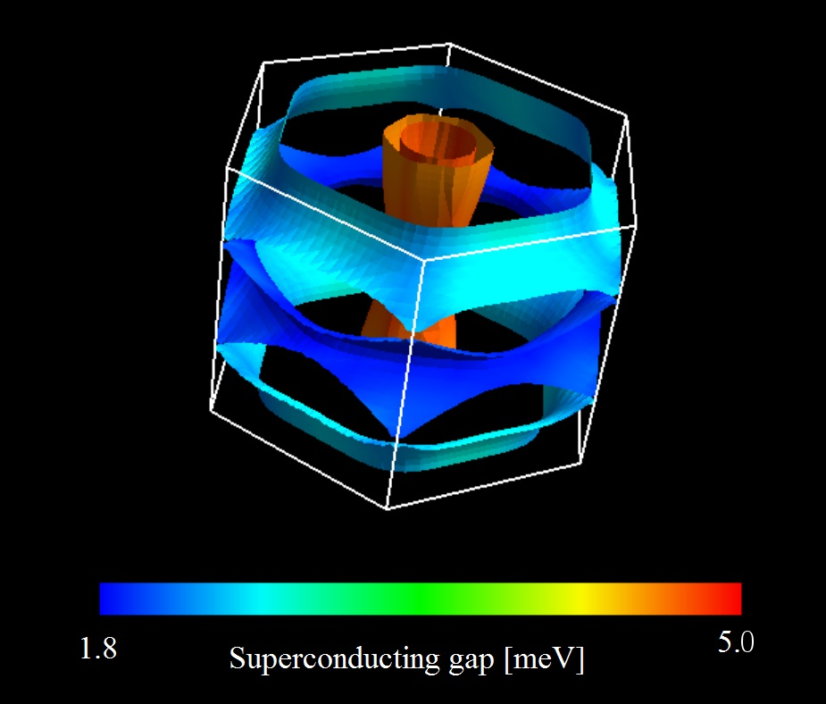

Sctk¶
The following tutorial should be done in sample/.
The pseudopotentials
B.pbe-n-rrkjus_psl.0.1.UPF
Mg.pbe-n-rrkjus_psl.0.3.0.UPF
are the part of the PS Library developed by THEOS group.
SCF calculation of the charge density¶
Input file: scf.in
Program: pw.x (Quantum ESPRESSO)
mpiexec option PATH/pw.x option -in scf.in > scf.out
mpiexec option PATH/pw.x option -in scf.in > scf.out
Run pw.x with calculation = "scf".
Note
We can perform first whether Calculations of phonon and electron-phonon interaction or coulomb .
Calculations of phonon and electron-phonon interaction¶
Calculation of phonon frequency and deformation potential¶
Input file: ph.in
Program: ph.x (Quantum ESPRESSO)
Important parameter
fildyn = 'mgb2.dyn': The file name for the dynamical matrix;- It will be used in the next step.
fildvscf = 'dv',: The file name for the deformation potential.- It will be used in the next step.
ldisp = .true.: We compute phonons on the uniform \(q\) grid.
lshift_q = .true.: We shift the \(q\) grid for avoiding- the singularity at \(\Gamma\) point.
nq1, nq2, nq3: The \(q\) grid.
mpiexec option PATH/ph.x option -in ph.in > ph.out
Note
If you are familiar to the ph.x program,
it is better to run in each \(q\) separately.
Calculation of electron-phonon interaction¶
Input file: elph.in
Program: ph.x (Quantum ESPRESSO)
Important parameter
electron_phonon = "scdft_input": compute the electron-phonon vertex from the deformation potential and the dynamical matrix that are already computed.
elph_nbnd_min, elph_nbnd_max: Since the electron-phonon interaction between the electronic states only in the vicinity of the Fermi surface affect the gap equation, we can reduce bands to decrease the numerical cost. The upper- and the lower limit of the bands that contain the Fermi level can be obtained by a programfermi_velocity.xin patched Quantum ESPRESSO.
By running ph.x with electron_phonon = "scdft_input",
mpiexec option PATH/ph.x option -in elph.in > elph.out
Calculation of screened Coulomb interaction¶
Non-SCF calculation with a dense \(k\) grid¶
Input file: nscf.in
Program: pw.x (Quantum ESPRESSO)
Important parameter
calculation = "nscf"
nbnd: For the calculating of the polarization function, we have to compute some empty states. We do not have to include so many empty state as the calculation of the insulator. Typically, the number of empty states becomes the same as the number of occupied states.
mpiexec option PATH/pw.x option -in nscf.in > nscf.out
Run pw.x with calculation = "nscf".
Then execute get_eigval.x
PATH/get_eigval.x
Input prefix the same as that of pw.x.
Calculation of wave functions for the screened Coulomb interaction¶
Input file: twin.in
Program: pw.x (Quantum ESPRESSO)
Important parameter
wf_collect = .true.
calculation = "bands":- Generated \(k\) points by using twingrid and redirect it to the input file as follows:
PATH/twingrid.sh 6 6 4 >> twin.in
This \(k\) mesh must be the same as nq1, nq2, and nq3 in the
input of ph.x at Sec. Calculation of electron-phonon interaction Then run pw.x with this input file.
mpiexec option PATH/pw.x option -in twin.in > twin.out
Calculation of screened Coulomb interaction¶
Input file: rpa.in
Program: rpa_el.x
Note
This part can be performed in each \(q\) point separately by creating
input files with different first_q and run simultaneously.
mpiexec option PATH/rpa_el.x < rpa.in > rpa.out
SCDFT SCF calculation¶
Input file: scdft.in
Program: scdft
After all calculation in Calculations of phonon and electron-phonon interaction and Calculation of screened Coulomb interaction finished, we can start SCDFT calculation.
mpiexec option PATH/scdft.x < scdft.in > scdft.out
Post processing¶
Input file: scdft.in
Program: deltaf
We can compute the following quantities from
delta.dat ( \(\Delta_{n k}\) which is generated in Sec. SCDFT SCF calculation .
\(\Delta_{n k}\) on the Fermi surface. FermiSurfer( http://fermisurfer.osdn.jp/ ) can display this data.
mpiexec option PATH/deltaf.x < scdft.in > deltaf.outGap function on the Fermi surface of MgB\(_2\) .
Quasi particle DOS. It requires long computational time.
mpiexec option PATH/qpdos.x < scdft.in > qpdos.out
Ultrasonic attenuation coefficient(experimental). Results are in standard output.
mpiexec option PATH/ultrasonic.x < scdft.in > ultrasonic.out